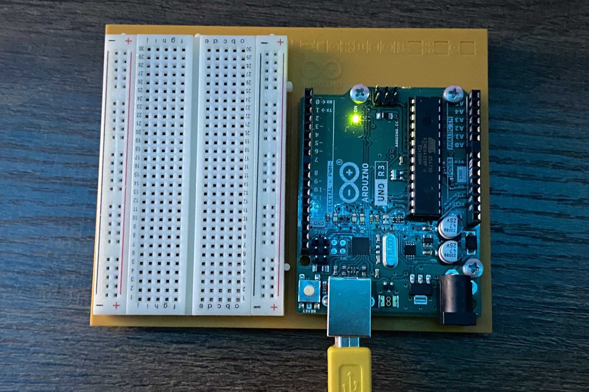
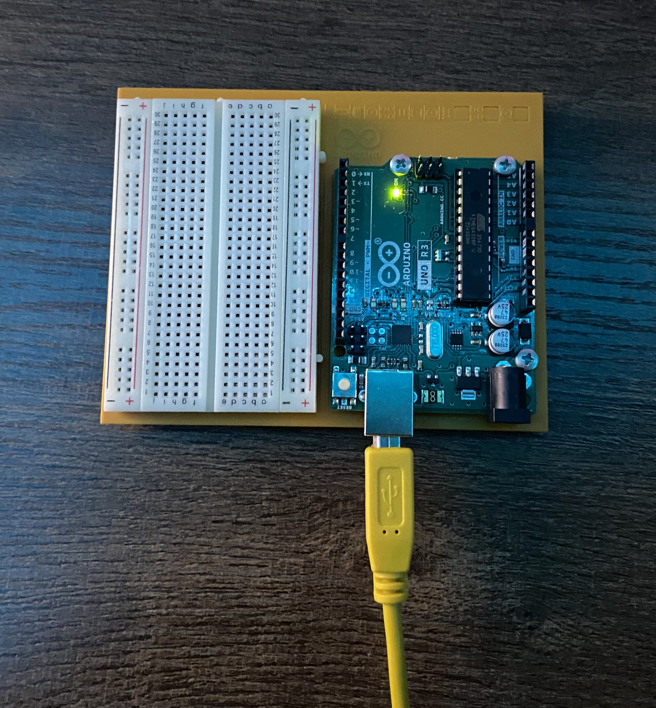

In the vast realm of digital technology, I've often found myself immersed in the intangible, abstract world of code
and virtual interfaces. But today, I'm venturing into a new frontier: the realm of physical computing.
Welcome to what is the beginning of a series of posts related to physical computing and alternative interfaces. I'll be detailing my journey of setting
up my Arduino, marking my initial foray into this exciting domain.
Setting Up the Workspace
Before diving in, I set up a dedicated workspace. A clean, well-lit table with all the necessary
tools: my pc, the
Arduino board, a USB cable, and the components I'd be working with. Organization is key when
dealing with tiny
components!

Installing the Arduino IDE
The Arduino IDE (Integrated Development Environment) is the software used to write and upload code to the
Arduino board. Downloading and installing it was a breeze. The user-friendly interface, with its clear
buttons and easy-to-navigate menus, made the process intuitive.
Connecting the Arduino
With the IDE installed, I connected the Arduino Uno to my laptop using the provided USB cable. A small
LED on the board lit up, signaling a successful connection.
Reflection
Setting up the Arduino was exciting and im eager to see what I can create. It's a platform that invites
exploration and creativity. Whether you're a seasoned developer or a newbie like me, the Arduino offers
a world of possibilities.
In the coming weeks, I plan to delve deeper into more complex projects.